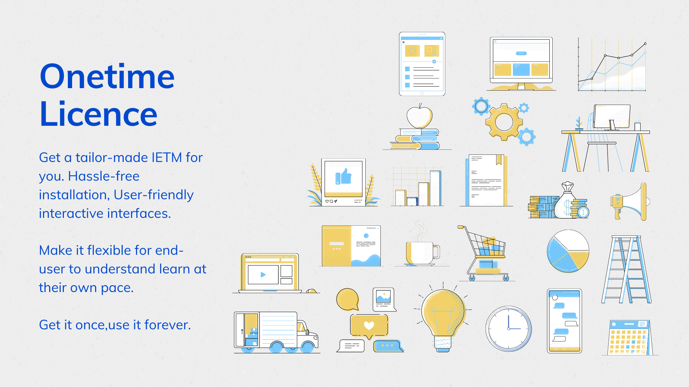

The current scenario of product/system documentation for defence sector contains hard copy documentation which complies to specific documentation standards. These standards provide a guideline to generate and publish user handbooks and technical manuals for complex mechatronic systems. With the introduction of digitization using software to control multiple aspects of the products, the documentation field is also moving towards digitization. To cater to this requirement, an Interactive Electronic Technical Manual (IETM) application is required to convert the hardcopy-based documentation in digital format (XML or HTML). IETM is a web-based, standalone or server configured, application. The salient features of the application are explained in the consequent section.
Challenges faced with current documentation setup
Any defence product has multiple systems from various vendors. These systems have their own set of documentation. Hard copy documentation takes up premium storage space onboard the equipment. Incase of any maintenance operation, the user has to refer three to four manuals simultaneously. These manuals seldom contain large sized drawings. To find out the location of fault and diagnostics procedure is a cumbersome task and requires a lot of time. The time invested to navigate the documents indirectly increases the Mean Time To Repair (MTTR).
Salient Features of IETM
IETM is a web-based, standalone or server configured application. ILXS has indigenously developed the application taking into account the hardware configuration existing in the current defence IT infrastructure. The IETM is a platform which allows users, based on their credentials, access relevant data.
The product user can navigate easily through a large amount of data and isolate faults in the least possible timespan. Similarly, an operator can understand the functioning of the system with relative ease with the help of multimedia content.
IETM Classes
Class 1
Class 2
Class 3
– Indexes and table of contents hyperlinked in the document
– Maintains structure and format of a printed book
– Can be scanned document with some links added
– Hyperlinks to figures, tables and section references
– Navigation buttons such as
– Could be marked up in XML
– Document is structured more freely following the logic of the content
– Hyperlinks to other documents
– Marked up in XML format
Class 4
Class 5
– Data in the form of structured XML schemas
– Standalone/server-based application
– Data stored in relational database
– User-based access to content
– Eliminates data redundancy
– Optimised search results using analysis of data sets
– Aggregate data from large number of inputs
– Data updation over internet
– Maintains Data integrity
– Structured XML schemas
Class 1
This IETM class follows the structure and format of a printed book, with indexes and table of contents that are hyperlinked into the content of the document.
Class 2
This format includes more hyperlinks than Class I, such as figures, tables and section references. A hyperlinked PDF document is the typical example.
Class 3
The difference between Class II and Class III is analogous to the difference between PDF book and a web site. The document would be marked up with XML.
ILXS - Class 3 IETM Features
User Based Login
Module Selection
Manage User
Manage Annotation
Manage Bookmarks
Print History
Backup / Restore
PDF documents
Class 4
Data stored in a relational database, obtaining benefits of data integrity and removal of data redundancy.
ILXS - Class 4 IETM Features
User Based Login
Module Selection
Manage User
Manage Annotation
Manage Bookmarks
Print History
Backup / Restore
PDF documents
Content Editor
Video content
Hotspots
Hyperlinking
Image Linking
Content Linking
Annotations
Bookmarks
Class 5
The IETM system may aggregate data from a large number of users input, feed that to the expert system that analyzes it and then the result gets feed back to the user through the IETM system.
IETM Standards
EED-P-23 - Naval Specifications for IETMs
JSG 0852:2001 - Joint Services Guide for IETMs
MIL-PRF-87268 - Performance specification of manuals, interactive electronic technical – general content, style, format, and user-interaction requirements.
MIL-M-87270 - Quality assurance program: interactive electronic technical manuals and associated technical information requirements.
MIL-PRF-28001 - MIL standard data format, BitMap, Indexing, Header files
ISO 8879:1986 - Specifications for Standarad Generalised Markup Language (SGML) for text and office systems.
S1000D - IETM documentation standards adopted by the consortium of European aerospace industry
Advantages of IETM
IETM eliminates the need for using premium storage space onboard the equipment. All the documents associated with the system are accessed in one location. As IETM eliminates the need for printing any document, it also becomes an environment friendly product by saving need to utilize natural resources.
IETM does not require connection to the internet which ensures data protection. It has credential based login which ensures only the correct personnel get access to the relevant data. Using the functionalities of the IETM, the user operation and maintenance task becomes relatively easier.
Study has shown that maintenance operator, experienced or inexperienced, have been able to isolate faults 100 percent of the time using IETM as compared to traditional paper-based documentation.
Cost-Effectiveness

IETM is a much cost-effective solution as it does not require modification of existing IT infrastructure. It totally eliminates the printing costs associated with documentation publishing. It limits physical training and implementation costs to a minimal value as the application is interactive and any inexperienced user can navigate through the features with basic computer training experience. The in-built editors will help the administrative user to update/modify/delete data at their convenience. Hence, data management cost incurred at vendor is eliminated. The application comes with onetime license.